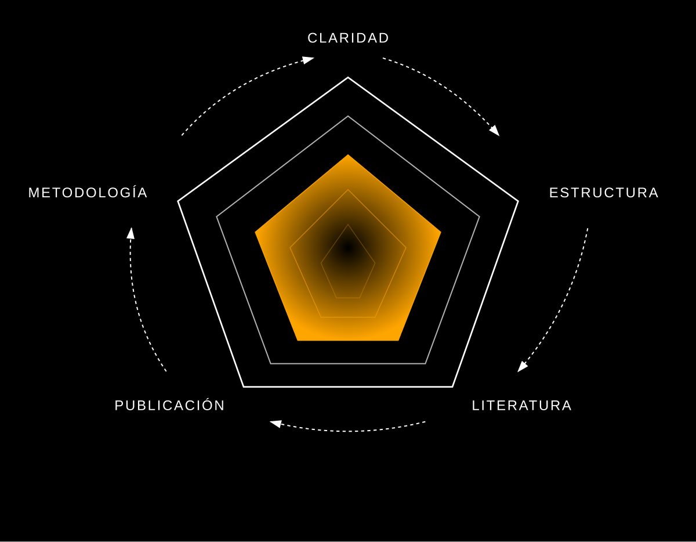
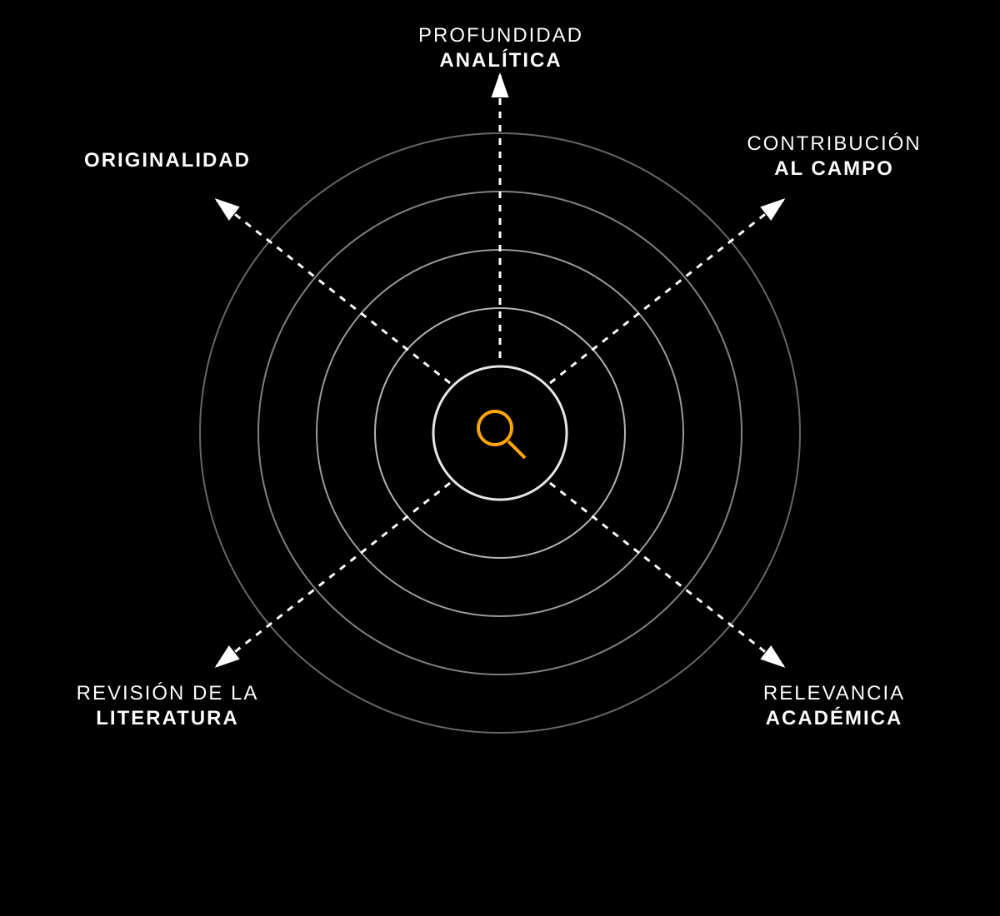
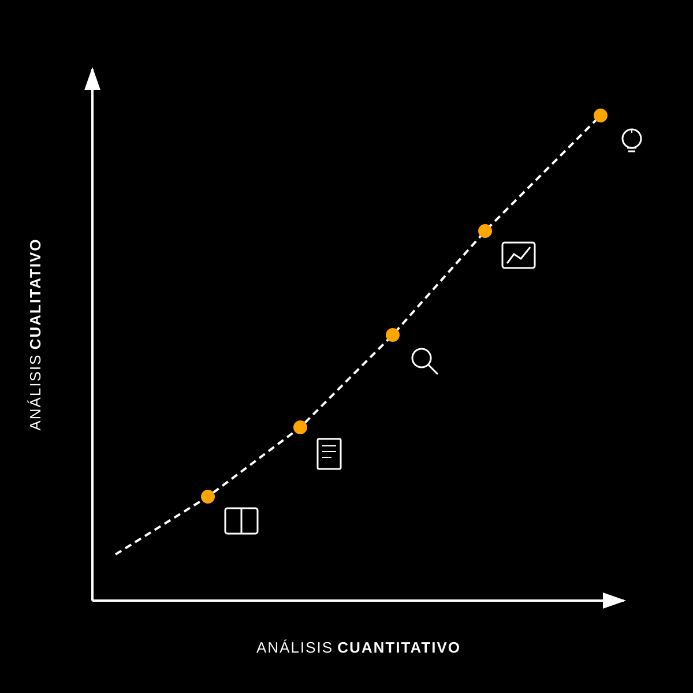
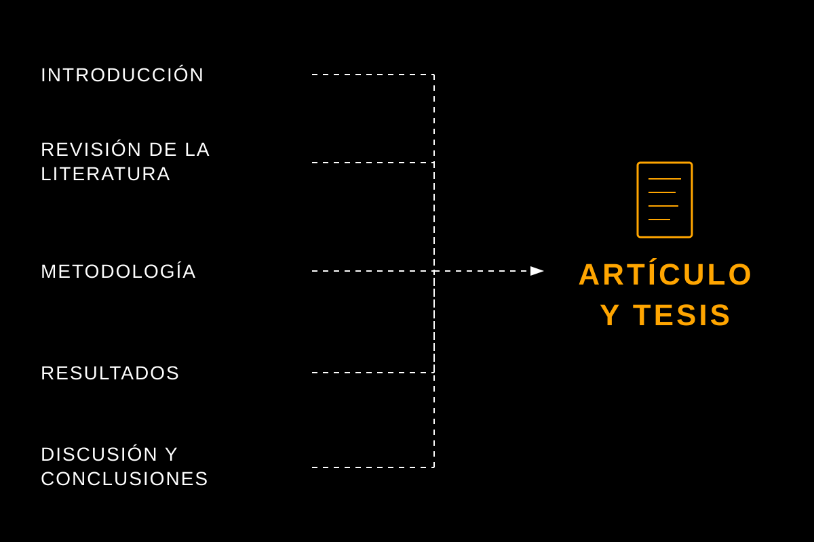
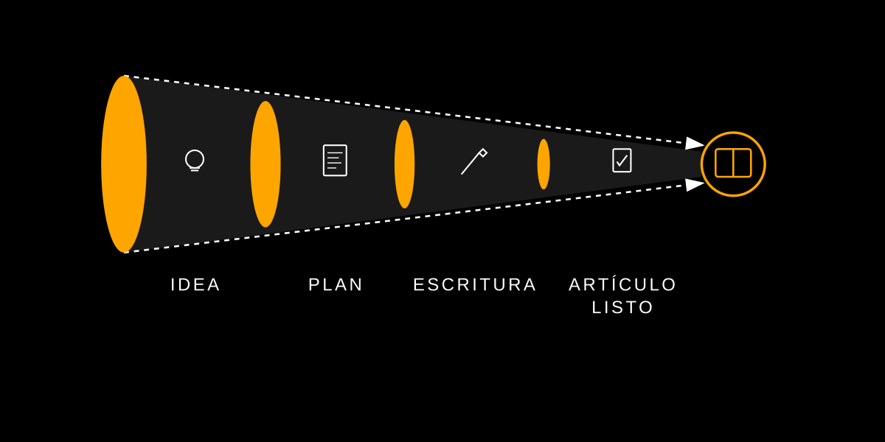
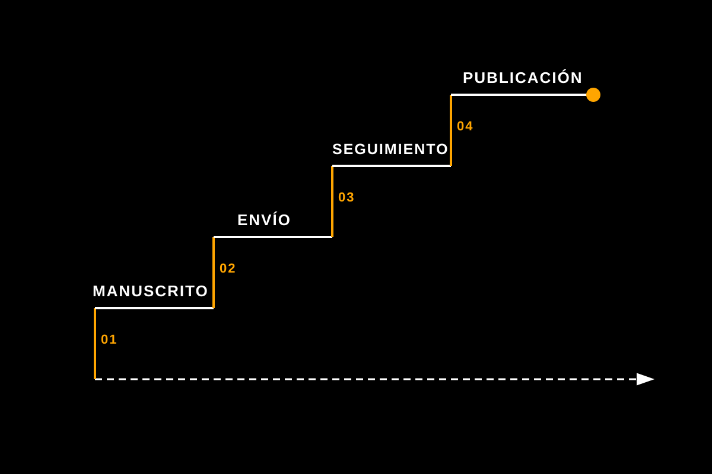

No es por falta de esfuerzo. Es porque nadie te ha dado un método claro, feedback honesto y acompañamiento real para llegar desde donde estás hasta una revista científica.
Escribes, reescribes y no sientes que avanzas. Cada versión del paper parece peor que la anterior.
Tu director de tesis tiene poco tiempo (o poco interés) en darte la orientación que necesitas.
No sabes a qué revista enviar, cómo estructurar el artículo o si tu metodología es la correcta.
La presión crece: plazos, financiación, síndrome del impostor. Y la publicación sigue sin llegar.
Te sientes solo en el proceso. No tienes a nadie que entienda tu situación y te guíe de verdad.
Un programa diseñado específicamente para investigadores que quieren dejar de dar vueltas y empezar a publicar. Con un mentor que pasa por el mismo proceso que tú, un método probado y acompañamiento continuo durante 6 meses.
Un recorrido estructurado que te lleva desde donde estás hasta el envío a revista.

Analizamos tu situación actual: en qué punto está tu investigación, qué has avanzado y qué obstáculos tienes. Definimos un plan realista y concreto.

Identificamos las revistas objetivo, analizamos sus requisitos y posicionamos tu paper para maximizar las posibilidades de aceptación.

Revisamos tu enfoque metodológico, análisis de datos y marco teórico. Identificamos debilidades y las convertimos en fortalezas antes de que lo hagan los revisores.

Trabajamos la estructura del artículo sección por sección. Abstract, introducción, resultados, discusión — cada parte con el nivel que exigen las revistas.

Feedback detallado en vídeo sobre cada versión. Iteramos hasta que el manuscrito esté listo para ser enviado con confianza.

Te acompaño en el proceso de submission: cover letter, respuesta a revisores y todo lo necesario para que tu paper llegue a buen puerto.
Todo lo que necesitas para avanzar sin excusas.
Sin límite de sesiones. Nos reunimos tantas veces como haga falta para que avances. Tu ritmo, tu proceso, pero con acompañamiento real.
Dudas rápidas, consultas entre sesiones, momentos de bloqueo. Estoy a un mensaje de distancia durante los 6 meses del programa.
Reviso tu manuscrito y te grabo un vídeo detallado con comentarios, sugerencias y correcciones. Como tener un tutor dedicado 100% a ti.
Ángeles Moreno
Doctoranda, Universidad de Córdoba
Jonathan Collado
Doctorando en Historia y Arte
El programa está diseñado para investigadores de cualquier disciplina. El método se adapta a las particularidades de tu campo, ya sea economía, historia, educación, psicología u otras áreas.
Las que necesites. No hay límite. Algunos meses necesitarás más acompañamiento que otros, y el programa se adapta a tu ritmo. Lo importante es que avances, no contar sesiones.
No necesariamente. El programa comienza con un diagnóstico de tu situación actual. Puedes estar en fase de análisis de datos, tener un borrador avanzado o solo la idea. Partimos desde donde estés.
Me envías tu manuscrito o la sección en la que estés trabajando. Lo reviso en detalle y te grabo un vídeo comentando cada parte: qué funciona, qué mejorar, cómo reestructurar. Es como tener una tutoría privada que puedes revisar las veces que quieras.
El programa requiere de una inversión importante porque es intensivo y personalizado. En la llamada evaluaré personalmente si encajas en el programa, y te explicaré las opciones disponibles.
Absolutamente. La mayoría de mis mentorados trabajan, dan clase o tienen otras responsabilidades. El programa se adapta a tu disponibilidad. Lo que necesitas es compromiso real con tu investigación, no dedicación exclusiva.
Si has seguido todos los pasos del programa y al cabo de los 6 meses aún no has conseguido enviar tu artículo, sigo trabajando contigo de forma gratuita hasta que lo logres. Mi compromiso es con tu resultado, no con un calendario rígido.